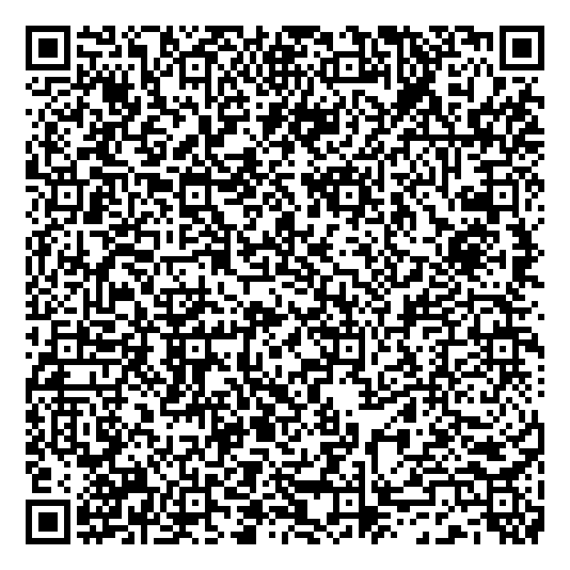

Traduction automatique — non relue par une personne
Cette page a été traduite automatiquement. Aucune personne n’a relu ni validé cette traduction, qui peut contenir des erreurs. Seule la page dans la langue source fait foi. Lire l’original (anglais)
Machine translation — not reviewed by a person
This page was translated automatically. No person has reviewed or adjudicated this translation, and it may contain errors. The source-language page is the authoritative text. Read the original (English)
Générer un code QR
Cette page est une présentation guidée, étape par étape et destinée aux responsables de la mise en œuvre, de la façon dont un certificat de santé signé devient un code QR sur une feuille de papier ou un écran de téléphone, et de la façon dont un vérificateur retransforme ce code QR en données dignes de confiance.
Le conteneur, la signature et l’encodage de transport sont les mêmes pour tous les domaines de confiance du GDHCN et sont spécifiés de manière normative dans la spécification HCERT. Ce qui change d’un cas d’usage à l’autre, c’est uniquement la charge utile : quel modèle logique est placé dans la revendication hcert, et sous quelle sous-revendication. Tout ce qui suit ce choix est mécanique.
En cas de divergence apparente entre cette page et la spécification HCERT, c’est la spécification HCERT qui fait foi.
1. Vue d’ensemble de la chaîne de traitement
Step 1 Select payload type DVC, for this walkthrough
Step 2 Assemble payload { "n": ..., "dob": ..., "vx": {...} }
Step 3 Wrap in CWT claim set { 1: iss, 6: iat, 4: exp, -260: { -6: payload } }
Step 4 Serialise as CBOR binary
Step 5 Sign as COSE_Sign1 (ES256) binary, tag 18
Step 6 Compress with ZLIB/Deflate binary
Step 7 Encode as Base45 ASCII
Step 8 Prefix context identifier "HC1:" + ASCII
Step 9 Render QR (Alphanumeric, EC Q) image
Les étapes 3 à 9 ne varient jamais selon la charge utile. Un vérificateur parcourt la même liste en sens inverse.
Exemples en direct. Chaque étape ci-dessous comporte un exemple en direct qui s’exécute dans votre navigateur, au moyen d’une version WebAssembly d’une bibliothèque HCERT libre (litlfred/smart-trust-tools). Ils partagent un même certificat : modifiez la charge utile à l’étape 2 et toutes les étapes suivantes sont réexécutées. La clé de signature ci-dessous vient d’être générée par votre navigateur. Elle ne peut pas quitter la page, et son certificat est un DSC de test autosigné ne figurant sur aucune liste de confiance ; rien de ce qui est produit ici ne peut donc être vérifié ailleurs.
2. Étape 1 — Choisir le type de charge utile
Une charge utile est identifiée par une sous-revendication à l’intérieur de la revendication hcert (-260). Les sous-revendications, et le modèle logique que chacune contient, sont énumérés dans le modèle logique HCert ; la section 3.2.7.1 de la spécification HCERT fait foi quant à celles qui sont attribuées. Les domaines de confiance enregistrés sont répertoriés dans le jeu de valeurs GDHCN Trust Domain et décrits sous Domaines de confiance.
Deux points méritent d’être connus avant de choisir un numéro. Les sous-revendications 0 et supérieures sont réservées par l’OMS et sont attribuées conjointement avec un domaine de confiance, par l’intermédiaire du Secrétariat du GDHCN. Les sous-revendications qui sont des entiers négatifs constituent la plage de développement et sont libres d’utilisation ; une implémentation qui en utilise une est donc un projet pilote ou un déploiement de développement, et la stabilité du numéro n’est pas garantie.
La section 3.2.7 de la spécification permet que plusieurs types de certificats de santé coexistent sous la revendication hcert. N’en contenir qu’un seul est un choix d’implémentation, et non une contrainte du conteneur ; c’est le choix retenu tout au long de cette page.
Dans cette présentation guidée, la charge utile est un DVC — un certificat numérique de vaccination (Digital Vaccine Certificate) — contenu sous la sous-revendication
-6. Les étapes ci-dessous sont celles qui s’appliquent à cette charge utile. Une autre charge utile ne modifie que l’étape 2 ; les étapes 3 à 9 sont identiques.
3. Étape 2 — Constituer la charge utile
Renseigner le modèle logique correspondant au type de charge utile choisi. Pour un DVC, il s’agit de DVCMinPreQual, dont les détails de vaccin sont DVCMinVaccineDetailsPreQual. Suivre ces définitions pour la liste des éléments, les cardinalités et les liaisons, plutôt qu’une quelconque copie de celles-ci.
DVCMinPreQual est le modèle concret : son parent DVCMin est abstrait, tout comme DVCMinVaccineDetails ; aucun des deux ne peut donc être instancié directement.
Les noms d’éléments comptent deux ou trois caractères, car chaque octet se paie deux fois — une fois dans l’encodage CBOR et une autre dans le nombre de modules du code QR.
Quatre points relatifs à l’utilisation du modèle ne ressortent pas de la StructureDefinition et méritent d’être précisés ici :
vxa la cardinalité 1..1. Un DVC documente un seul acte de vaccination. Une visite au cours de laquelle deux vaccins sont administrés donne lieu à deux certificats et deux codes QR.- Au moins l’un des éléments
isoucndoit être présent — l’invariantmust-have-issuer-or-clinician-name. idest facultatif précisément parce que de nombreux sujets de certificat n’ont pas de pièce d’identité. Le nouveau-né en est l’exemple évident ;gncontient alors le parent ou le tuteur.vpest lié de manière obligatoire (required binding) aux identifiants de produits de la préqualification (PreQual) de l’OMS ; le produit administré doit donc être recherché dans la base de données PreQual des vaccins et c’est cet identifiant qui doit être utilisé. Un code clinique du type de vaccin ne suffit pas.
4. Étape 3 — Construire l’ensemble de revendications CWT
Placer la charge utile sous sa sous-revendication, à l’intérieur de la revendication hcert, elle-même à l’intérieur d’un ensemble de revendications CWT — voir ce modèle pour les clés et types des revendications, et la section 3.2 de la spécification pour leurs définitions normatives.
exp mérite une attention particulière, car c’est le seul mécanisme de révocation qu’offre la présente spécification : les certificats ne peuvent pas être révoqués de manière fiable une fois émis ; la période de validité doit donc être choisie de façon à limiter les dommages en cas de compromission d’une clé, en tenant compte de la possibilité pour le titulaire de revenir obtenir une nouvelle émission. Elle ne doit pas dépasser la période de validité du DSC lui-même, et iat ne doit pas lui être antérieur. Voir la section 6.1.
5. Étape 4 — Sérialiser en CBOR
Encoder l’ensemble de revendications en CBOR (RFC 7049). Le JSON présenté sur cette page et dans les modèles logiques n’est qu’une notation de schéma — le format de transmission est CBOR, et une implémentation n’a jamais besoin de produire la forme JSON.
Les chaînes DEVRAIENT être normalisées en NFC. Les décodeurs DEVRAIENT être tolérants envers les entrées qui ne le sont pas.
6. Étape 5 — Signer sous forme de COSE_Sign1
Envelopper la charge utile CBOR dans une structure COSE à signataire unique (RFC 8152), balise CBOR 18, avec alg (label 1) et kid (label 4) dans l’en-tête protégé.
ES256 est l’algorithme principal (alg -7) et PS256 l’algorithme secondaire (-37). Les deux DOIVENT être implémentés, même si un seul signe un certificat donné ; l’algorithme secondaire existe pour qu’une faille de l’algorithme principal ne paralyse pas l’ensemble du réseau. kid PEUT figurer à la place dans l’en-tête non protégé, et les vérificateurs DOIVENT accepter les deux emplacements — mais lorsqu’il figure dans les deux, c’est la valeur protégée qui prévaut.
Dérivation du kid : prendre l’encodage DER du DSC et utiliser les 8 premiers octets de son empreinte SHA-256. Comme il est tronqué, kid n’est pas unique ; un vérificateur qui trouve plusieurs DSC ayant le même kid DOIT donc les essayer tous. kid n’est pas critique pour la sécurité ; c’est une aide à la recherche.
Calcul de la signature : construire le Sig_structure
Sig_structure = [ "Signature1", protected_header_bstr, external_aad (empty), payload ]
le sérialiser en CBOR, puis signer ces octets. Pour ES256, la valeur de signature COSE est la concaténation à largeur fixe r || s, de 32 octets chacun — et non l’encodage ASN.1 DER que la plupart des bibliothèques cryptographiques renvoient par défaut. La conversion entre les deux est le bogue d’interopérabilité le plus courant dans les implémentations HCERT.
La structure obtenue est 18([protected, unprotected, payload, signature]).
7. Étape 6 — Compresser
Compresser la structure COSE avec ZLIB (RFC 1950) au moyen de Deflate (RFC 1951). La compression intervient après la signature ; le vérificateur décompresse donc avant de vérifier.
8. Étape 7 — Encoder en Base45
Encoder les octets compressés en Base45. Base45 existe pour une seule raison : son alphabet de 45 caractères correspond exactement au jeu de caractères alphanumérique du code QR, qui stocke les données de manière beaucoup plus dense que le mode octet.
9. Étape 8 — Ajouter le préfixe d’identifiant de contexte
Ajouter le préfixe HC1: à la chaîne Base45. Les vérificateurs s’en servent pour reconnaître ce qu’ils ont scanné et le schéma de décodage à appliquer. Une future révision non rétrocompatible utilisera un nouvel identifiant, en passant successivement à [1-9] puis à [A-Z].
10. Étape 9 — Générer le code QR
| Propriété | Exigence |
|---|---|
| Symbologie | Code QR, ISO/IEC 18004:2015 — DOIT |
| Mode d’encodage | Alphanumérique (mode 2, symboles 0010) — DOIT, conjointement avec Base45 |
| Correction d’erreurs | Niveau Q, environ 25 % — RECOMMANDÉ |
| Taille de rendu | 35 mm à 60 mm de diagonale — RECOMMANDÉ |
Si vous imprimez à moins de 300 ppp, veillez à ce que chaque module soit rendu sous forme de carré exact. Une mise à l’échelle non proportionnelle transforme les modules en rectangles et est une cause fréquente de certificats lisibles à l’écran mais pas sur papier.
11. Vérification : les mêmes étapes en sens inverse
- Confirmer la présence du préfixe
HC1:et le retirer. - Décoder le Base45, puis décompresser avec ZLIB.
- Analyser le COSE_Sign1 et lire
algetkiddans l’en-tête protégé. - Valider l’entrée avant de s’y fier. L’analyse de l’en-tête protégé intervient nécessairement avant la vérification de la signature, ce qui en fait une surface d’attaque ; vérifier les types et les longueurs de manière défensive. Voir la section 6.3.
- Rechercher le
kiddans la liste de confiance, en récupérant tous les DSC correspondants. - Reconstruire le
Sig_structureet vérifier la signature avec chaque DSC candidat jusqu’à ce que l’un d’eux réussisse. Vérifier la signature avant de traiter la charge utile. - Décoder la charge utile CBOR et vérifier
expetiatpar rapport à l’heure actuelle. - Lire la revendication
hcert, aiguiller selon la sous-revendication vers le modèle logique approprié, et seulement ensuite appliquer les règles métier.
Les identifiants Extended Key Usage de l’appendice A.2 sont hérités de l’EU DCC et couvrent le test, la vaccination et le rétablissement. Ils n’ont pas été appliqués aux types de charge utile introduits depuis, et il n’existe aucune correspondance entre les nouvelles sous-revendications et un usage des clés ; un vérificateur n’a donc rien à quoi les comparer pour un DVC.
Vérifiez la chaîne produite ci-dessus, modifiez-en un caractère et observez l’étape qui la bloque, ou collez n’importe quelle chaîne HC1: :
12. Exemple détaillé — DVC d’une dose à la naissance chez un nouveau-né
12.1 Scénario
Une famille de la République démocratique populaire lao rend visite à des proches à l’étranger lorsque la mère accouche. Avant sa sortie, le nouveau-né reçoit les vaccinations de routine à la naissance prévues par le calendrier national de vaccination de l’enfant du pays d’accueil. La clinique enregistre les doses et émet un certificat signé ; la famille ne dispose que d’un seul téléphone partagé ; la clinique imprime donc une carte papier portant le code QR et propose la remise numérique en option.
Cela détermine directement les choix de conception :
- Un DVC plutôt qu’un ICVP. L’hépatite B et le BCG sont des vaccins du calendrier de routine, et non des conditions d’entrée au titre du Règlement sanitaire international.
- Les données dans le code QR plutôt que derrière un lien. Le certificat doit pouvoir être vérifié dans une clinique rurale du pays d’origine, sur papier, sans connectivité fiable.
- Deux certificats.
vxa la cardinalité 1..1 ; la visite de naissance donne donc lieu à un certificat par vaccin. - Pas de
id, mais ungn. Le nouveau-né n’a pas de pièce d’identité. L’élément relatif au tuteur contient à la place le nom de la mère. - La nationalité et l’émetteur diffèrent.
ntest la nationalité du nourrisson (LAO) ; l’émetteur est le pays dont la clinique a administré la dose. Cette distinction est précisément la raison d’être du modèle.
12.2 Calendrier du pays d’accueil
Le Programme élargi de vaccination de la Thaïlande prévoit deux vaccins à la naissance : le BCG dès que possible après la naissance, et la première dose de vaccin contre l’hépatite B dans les 24 heures suivant la naissance. Les séries DTC-HepB et VPO commencent plus tard, à 2, 4 et 6 mois. Une visite de naissance en Thaïlande produit donc exactement les deux certificats modélisés ici.
Les responsables de la mise en œuvre devraient vérifier le calendrier en vigueur auprès de l’autorité nationale avant de s’y fier ; les calendriers sont révisés.
12.3 Émetteur
L’exemple est émis par le participant DEV du GDHCN XXR, et non par un État Membre. Les codes de participant au GDHCN suivent la norme ISO 3166-1 alpha-3, tandis que la revendication CWT iss et l’attribut de pays X.509 utilisent la forme alpha-2 — ici XR, qui correspond à l’attribut C=XR du sujet du certificat de signataire de documents.
La signature utilise une clé dont la clé publique est intégrée au réseau de confiance DEV du GDHCN ; l’exemple peut donc être vérifié avec la liste de confiance DEV. La clé privée est conservée dans l’environnement de construction et n’entre jamais dans ce dépôt ; seuls le DSC, la SCA, les images QR et les chaînes HC1: sont publiés.
Comme iat doit se situer dans la période de validité du DSC et que exp ne doit pas la dépasser, les dates du scénario se trouvent dans la fenêtre du certificat DEV intégré.
12.4 La charge utile
Dose d’hépatite B à la naissance, hcert sous-revendication -6, présentée en notation JSON. vp contient l’identifiant de produit PreQual du produit effectivement administré :
{
"n": "Chanthala SOUVANNALATH",
"dob": "2026-10-21",
"s": "female",
"nt": "LAO",
"gn": "Mali SOUVANNALATH",
"vx": {
"vp": "a3K3X000006MiiXUAS",
"dv": "2026-10-21",
"cn": "Dr Pimchanok WATTANA",
"is": "org-xxr-provincial-hospital",
"bo": "HEPB-2026-0914"
},
"v": "1.0.0"
}
a3K3X000006MiiXUAS correspond à Hepatitis B Vaccine (rDNA) (Paediatric) (FVP-P-132) dans les identifiants de produits PreQual de l’OMS. Le certificat BCG est identique, à l’exception de vp, qui contient a3K3X000006MiiCUAS, BCG Vaccine (FVP-P-73), et son numéro de lot.
Enveloppé dans l’ensemble de revendications CWT :
{
"1": "XR",
"6": 1792657800,
"4": 1824193800,
"-260": { "-6": { "...": "the payload above" } }
}
12.5 Taille à chaque étape
Pour le certificat d’hépatite B :
| Étape | Taille |
|---|---|
| Ensemble de revendications CWT, CBOR | 222 octets |
| COSE_Sign1, signé | 307 octets |
| Compressé ZLIB/Deflate | 293 octets |
Base45 + préfixe HC1: |
444 caractères |
| Symbole QR | Version 16, correction d’erreurs Q, mode alphanumérique |
La signature et ses en-têtes représentent 85 des 307 octets — pour des charges utiles aussi petites, la cryptographie coûte plus cher que les données cliniques. C’est pourquoi les modèles minimaux utilisent des noms d’éléments de deux caractères, et pourquoi une charge utile beaucoup plus volumineuse que celle-ci n’a pas du tout sa place dans un code QR.
12.6 Les certificats
Dose d’hépatite B à la naissance :

HC1:NCFOXN%TSMAHN-HHPC*8W$BM70GZW8WI47X5JU9V21HJI.OR.6J:X90$TZIPAN9I6TSQLMN2SRPOK62YU%E6SOEGW2Z0W/TO+4W3R3ZP3XQ7KUHMQQTOE2QERM2ZGA2:UG%UBPISWUO FFPEUCAQZ4K%I7YV4SVO*I1R5LK90DQK7E$BESW6846OVQICMKR6PK96M53A5/41B$P6 0JIIO*LM4UJH2/JT0DJ$JAGU09VCRCKCWC.XI5TBC+J$ZIMOBKEALOB3YIX1JM7JZIJXUK0HIQVBPEB:CJZTAI8A+BDWZD$BCTD0D4OZFJ3JKJMOZD5+B9$/G547Z2ETZVJFD-ST53VMK9E/AUJ6R9KFAQB+RL7JYX69$1K-PF:E+7AYCTGARL6KGND1K6CPFT*P-8AHFSA16U9FS34:TG/0E 6$TP*705SS44
BCG, le second certificat de la même visite :

HC1:NCFOXN%TSMAHN-HHPC*8W$BM70GZW8WI4%%5JU9V21HJI.OR.6J:X90$TZIPAN9I6TSQLMN2SRPOK62YU%E6SOEGW2Z0W/TO+4W3R3ZP3XQ7KUHMQQTOE2QERM2ZGA2:UG%UBPISWUO FFPEUCAQZ4K%I7YV4SVO*I1R5LK99AQ7LED9RNF66J6QW6:9631A*2QYDEUGAEHP8X9HSRH8KE62.13%USNCTZXIK/IL-A9AD.PD0DJGDBAB4X3C+1MRCA0ZKI8AZ3CYIJ*ZJFDJ0UJM2C8BI/NI6SI1-ACYI0+TKQ3200M:C IJM5Q52IHJP7NVQ794S8E41F.520NRYE2.JDAOSZFZNM*SJ7ONT5DE*VMKL$ASR%514QW*PA4DOQF%MV9CUYMDO:0VWKY4M.QPYI4I$U*.885E L1JJBHA5T B961BC0/:E
Les deux certificats portent l’identifiant de clé kW/6VnwPRKI= (hex 916ffa567c0f44a2).
Pour les vérifier, résoudre ce kid au moyen de la liste de confiance du GDHCN plutôt qu’au moyen d’une quelconque copie du certificat fournie à côté du code QR. Les points de terminaison des listes de confiance DID pour les environnements de développement, de test d’acceptation par les utilisateurs et de production sont répertoriés sous Trustlist Distribution Endpoints ; cet exemple est émis en DEV, son certificat de signataire de documents figure donc sur la liste de confiance DEV. La récupération du certificat de signature à partir de la liste de confiance est la voie de vérification définie par la spécification, et la seule qui indique au vérificateur que la clé est toujours digne de confiance — un certificat distribué avec le certificat qu’il a signé ne prouve rien à cet égard.
Les deux mêmes certificats, décodés et vérifiés en direct dans votre navigateur avec le certificat de signataire de documents de XXR provenant de la liste de confiance DEV :